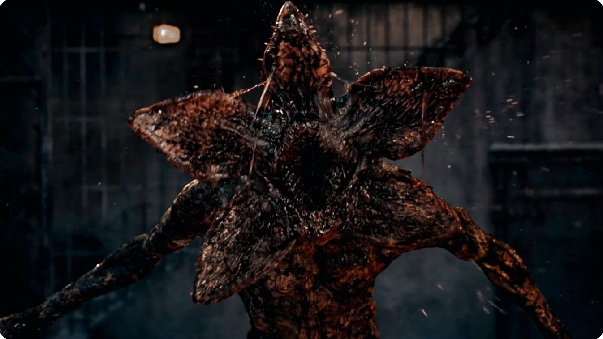
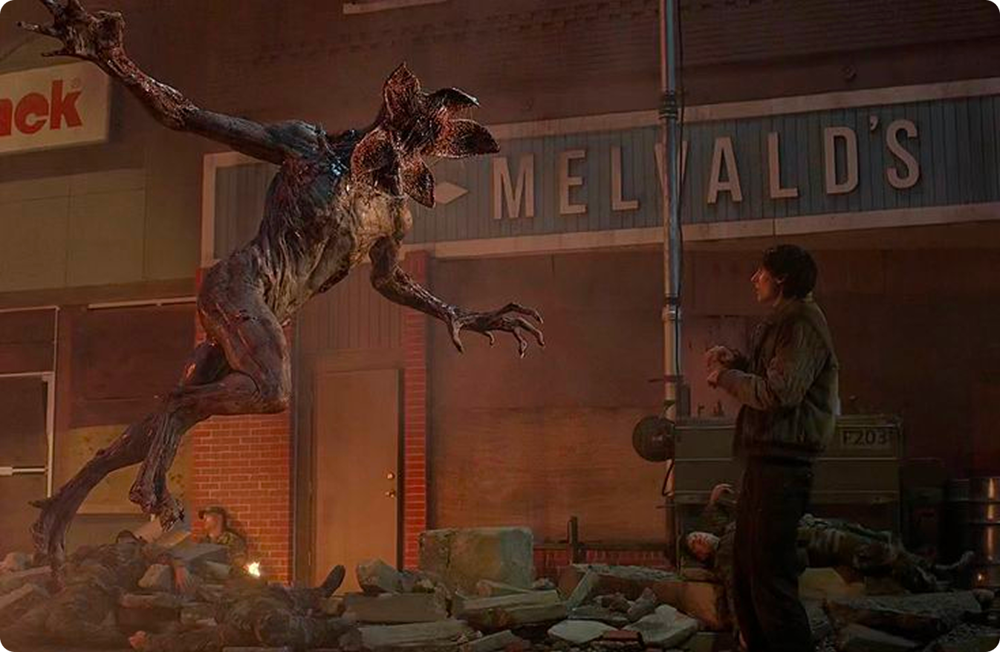
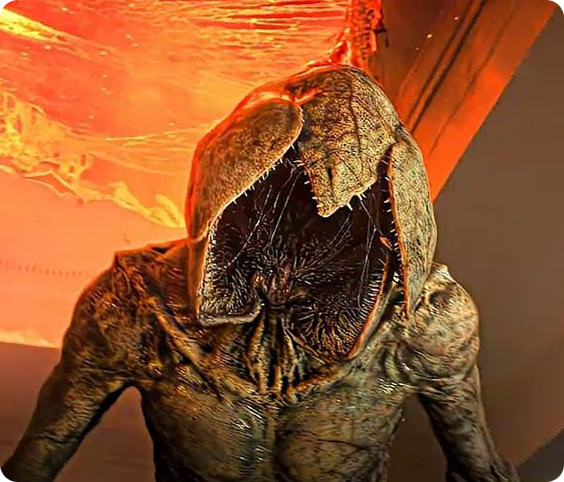
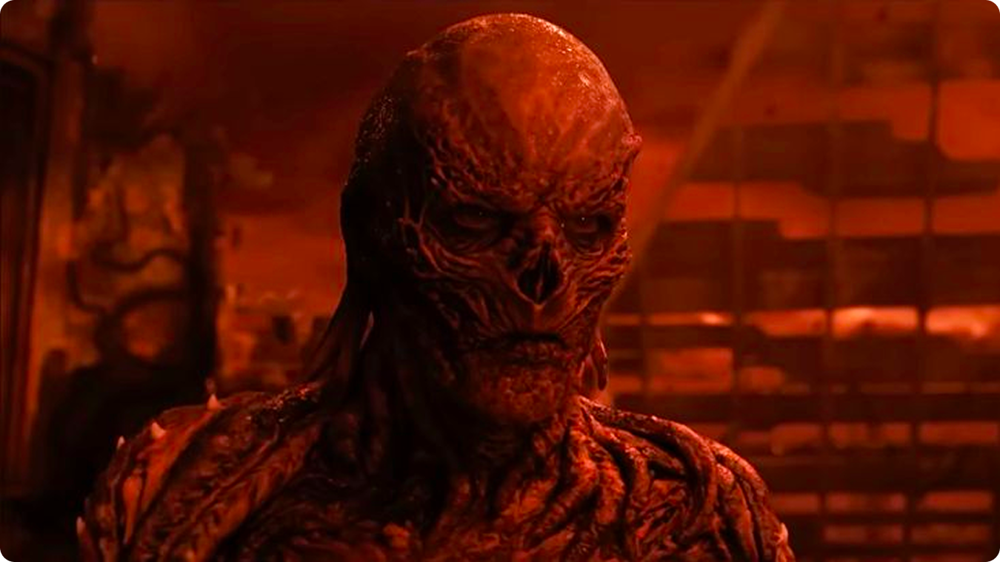
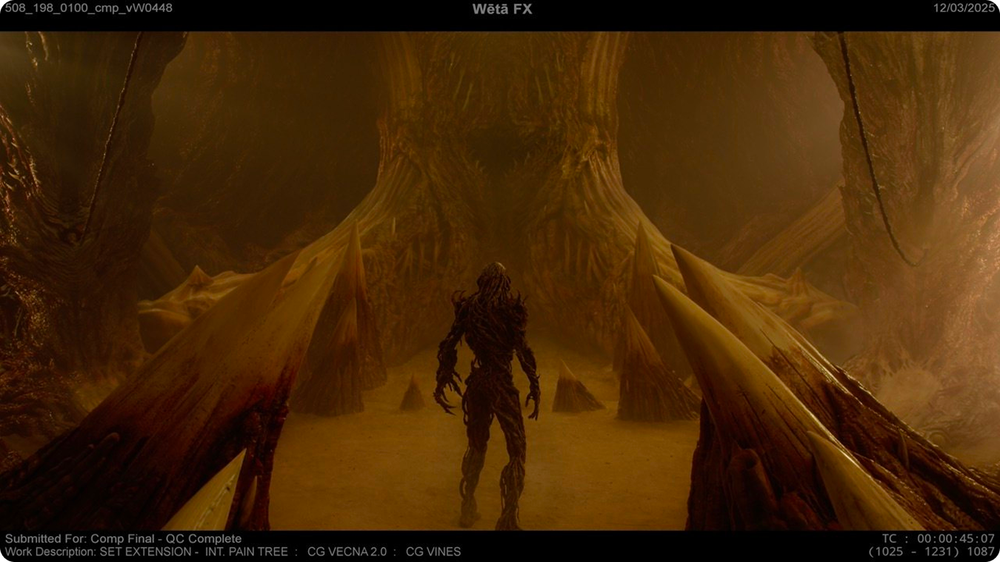
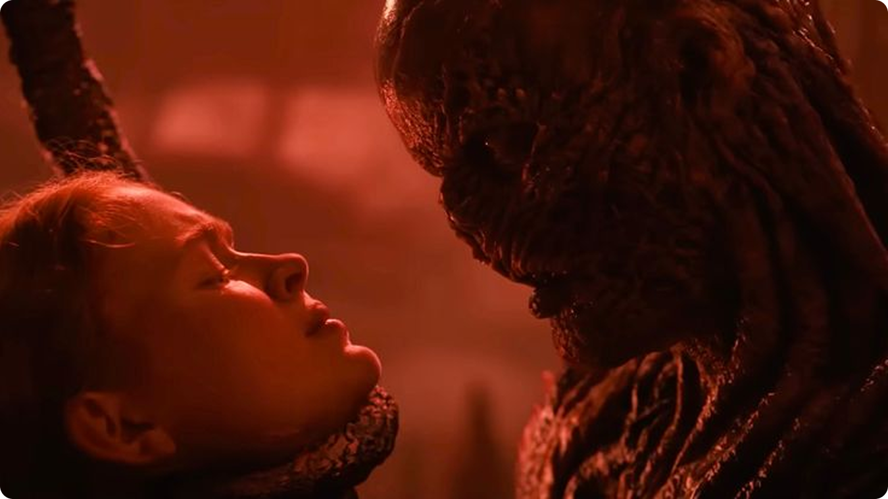
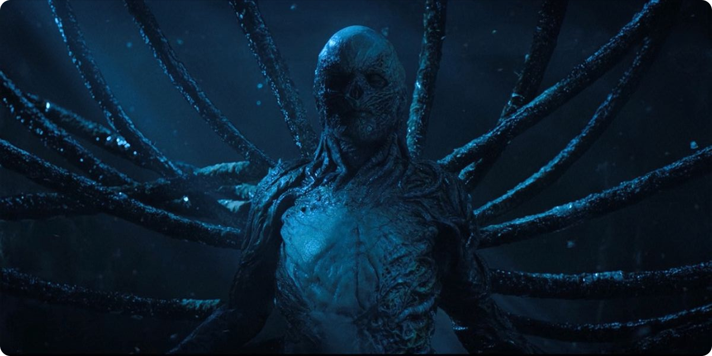
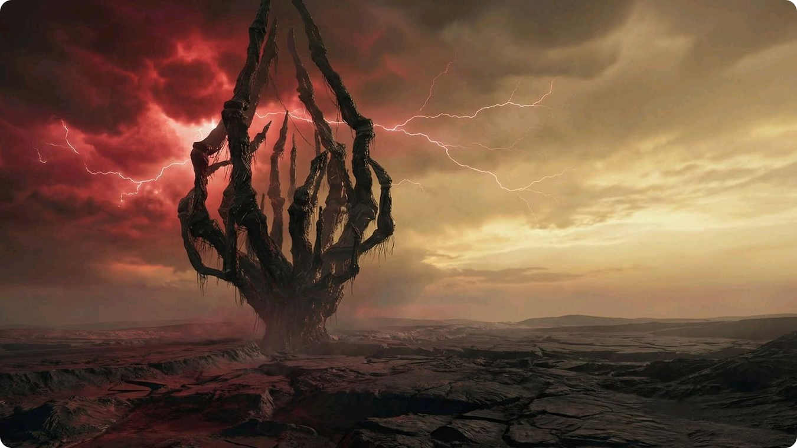

Демогоргон: первый главный монстр сериала
Первым важным монстром стал Демогоргон. Его дизайн строился вокруг идеи хищника из Изнанки: высокий гуманоид с раскрывающейся головой-цветком.
Когда снимали первый сезон, команда активно применяла практические эффекты. Они не просто так их использовали — речь шла о физических моделях, о разных элементах костюмов, и, конечно, об аниматронике. Кстати, сам образ Демогоргона был делом рук студии Spectral Motion, которая, к слову, очень хорошо известна своими монстрами и гримом, сделанными вручную. Вся работа над ним включала лепку, изготовление форм, механические штуки, а потом уже, на завершающем этапе, всё это дорабатывали в цифре.


Почему дизайн Демогоргона пугает
Главная сложность Демогоргона заключалась в том, что он должен был выглядеть одновременно органическим и чужеродным. Если бы создатели нарушили эту грань, то:
- он стал бы обычным монстром;
- зритель не поверил бы в его физическое присутствие;
- атмосфера была бы нарушена.


Так что тело Демогоргона оставили человеческим, а вот с лицом поступили довольно радикально: его попросту не стало. На месте, где мы ожидаем увидеть глаза, нос и рот, теперь просто зияет раскрывающаяся пасть. Это, безусловно, очень сильный дизайнерский ход. Почему? Потому что зрителю совершенно невозможно считать какие-либо эмоции этого существа. Самый сильный эффект ужаса возникает именно из-за отсутствия хоть сколько-нибудь привычного нам лица.
Истязатель разума: переход
к большому CGI
Во втором и третьем сезонах масштаб угрозы увеличился. Появились демопсы, а затем Истязатель разума — огромное существо, напоминающее паука или дымную тень.

Здесь практические эффекты уже не могли закрыть всю задачу. Истязатель разума:
- слишком большой;
- слишком подвижный;
- слишком нечеловеческий.

Особенно в третьем сезоне, где монстр получает мясную, телесную форму, важную роль сыграли CGI, симуляции тканей, текстуры влажной органики и работа с освещением.
Как цифровым монстрам добавляли материальность
Пожалуй, любопытно, как сериал, даже имея дело с полностью цифровыми монстрами, всё равно стремился сохранить принцип их физической ощутимости. Задумка была в том, чтобы компьютерная графика ни в коем случае не выглядела слишком гладкой или стерильной. И ведь получилось: монстры в «Очень странных делах» часто производят впечатление влажных, тяжёлых, с их неровными очертаниями и порывистыми движениями.

И в итоге зритель верит в чудовище не потому, что оно идеально нарисовано, а потому что оно будто имеет вес, запах, текстуру и сопротивление среды.
Векна: монстр как персонаж
Самым показательным примером сочетания старого и нового стал Векна в четвёртом сезоне. В отличие от гигантского Истязателя разума, Векна должен был быть не просто монстром, а персонажем.

Поэтому, при создании образа, авторы проекта решили довериться не только Джейми Кэмпбеллу Бауэру, но и возможностям по-настоящему сложного пластического грима. Для того, чтобы актёр полностью перевоплотился в Векну, в ход шли самые разные средства: от индивидуальных протезных элементов и контактных линз до специальных накладок и очень сложной, многослойной покраски. На нанесение всего этого сложного грима каждый раз уходило по несколько часов.
Почему Векну не сделали полностью цифровым

Решение использовать практический грим сильно влияет на восприятие персонажа. Векна не выглядит как полностью нарисованный злодей, потому что под гримом остаётся живой актёр:
- его взгляд;
- человеческая пластика;
- физически правдоподобное положение тела.

Когда Векна склоняется к жертве, зритель чувствует не просто спецэффект, а реальное присутствие тела в кадре. При этом компьютерная графика все же активно использовалась: она помогала доводить до идеала каждую деталь, усиливать нужные фактуры, добавлять естественные движения щупальцам и, что важно, гармонично связывать самого персонажа с миром Изнанки.

Визуальный смысл образа Векны
Визуально Векна продолжает эстетику сериала: он похож на смесь ожога, корней, мышц и разлагающейся кожи. Его тело выглядит так, будто он не просто живёт в Изнанке, а сам стал её частью.

Это довольно яркий пример дизайна, где внешний вид очень тесно переплетается с драматургией. Векна внушает страх не только своим обликом, но и тем смыслом, что за ним стоит: ведь он когда-то был человеком, и благодаря этому в нем сохраняются какие-то узнаваемые черты. Пожалуй, именно это и делает его куда более жутким, чем просто обычное чудовище.
Вывод
Монстры в «Очень странных делах» создавались по гибридному принципу. Когда нужна была близость, телесность и актёрская игра, команда использовала грим, костюмы, протезы и аниматронику. Когда требовался масштаб, разрушение, фантастическая пластика или невозможная анатомия, подключалась компьютерная графика.

За счёт этого сериал не выглядит полностью цифровым аттракционом. Его монстры пугают потому, что находятся на границе: они одновременно нарисованы и сделаны руками, фантастичны и материальны, современны и намеренно похожи на хоррор 1980-х. Именно это сочетание и стало одной из причин, почему визуальные образы сериала так хорошо запоминаются.